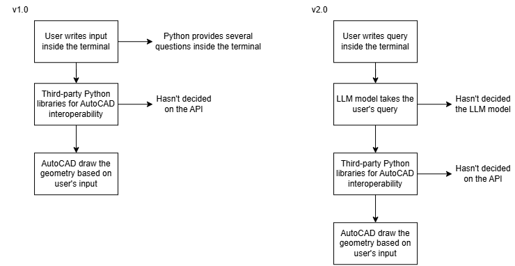

What changed since last update
- In Progress Reviewing existing solutions and analyzing their approaches to identify the gap between current capabilities and the project objectives.
- In Progress Exploring architectural options suited to the accessible AutoCAD API surfaces.
- In Progress Studying the AutoCAD API surfaces through the official Autodesk developer documentation.
Blockers and decisions required
No open blockers.
Planned Timeline (until Presentation 2, End Oct 2026)
1. Exploration on Design and Architecture
10 - 21 Aug 2026
2. Develop Python Script Prototype v1.0 (not LLM based yet)
24 Aug - 04 Sept 2026
3. Presentation 1
Mid Sept 2026
4. Implement LLM into the Python Script Prototype (v2.0)
Mid Sept to Oct 2026
5. Presentation 2
End Oct 2026
* All of these timelines are tentative and may be subject to change based on the progress of the project and any unforeseen challenges that may arise.
Workflow

* These are the initial prototype workflow. It may be subject to change based on the progress of the project and any unforeseen challenges that may arise.